Work Samples
Personal Calendar Organization
Demonstrated strong time management by organizing personal tasks, events, and routines using Microsoft Calendar. This reflects my ability to plan ahead, prioritize effectively, and maintain a structured schedule.
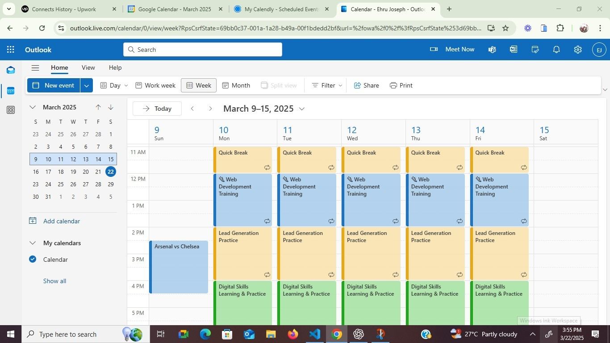
Email Management
Efficient email organization, categorization, and scheduling using Gmail's features to ensure seamless communication.
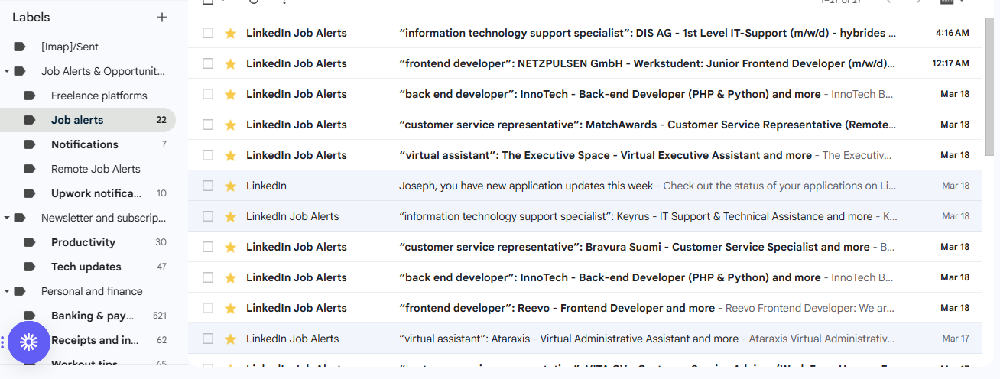 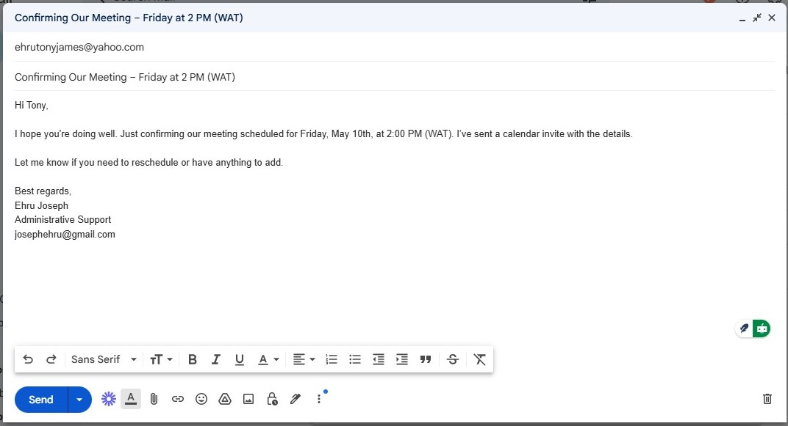Google Docs
Collaborative document creation and sharing to streamline team communication and reporting.
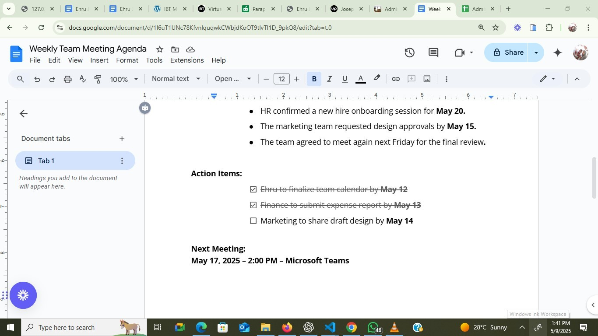 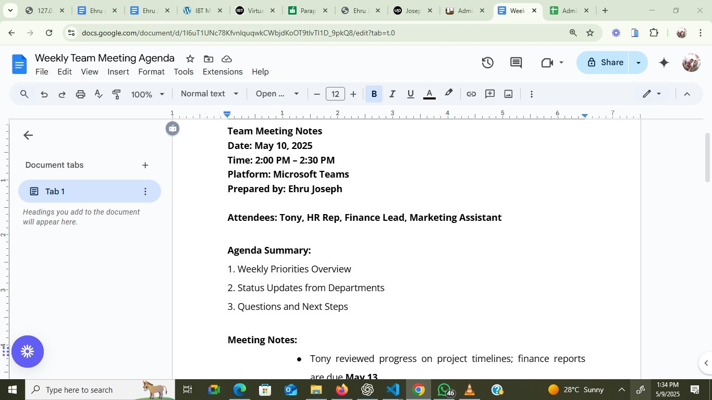Google Sheets
Managed data and task tracking using Google Sheets to support organized project workflows.
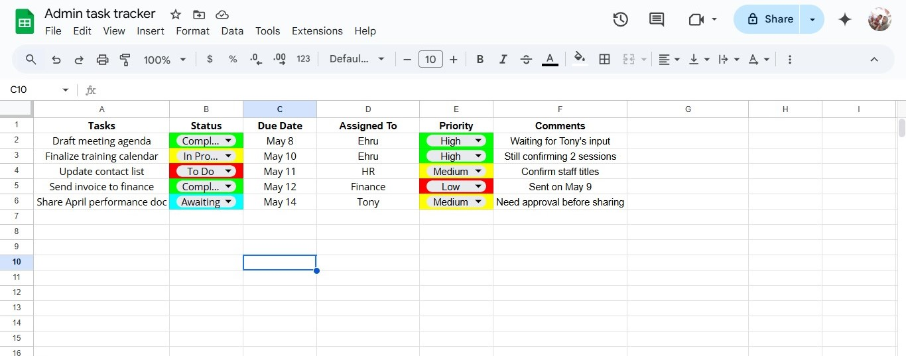Clockify
Tracked work hours and analyzed productivity using Clockify for effective time management.
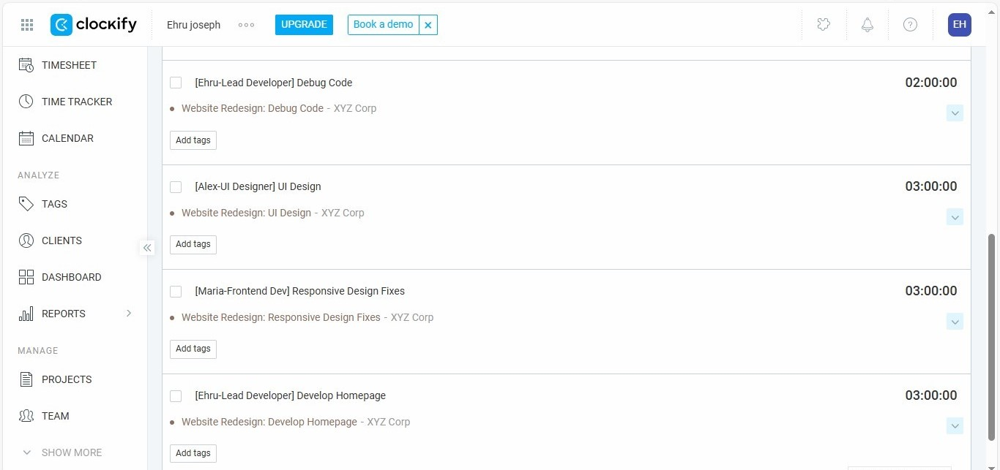 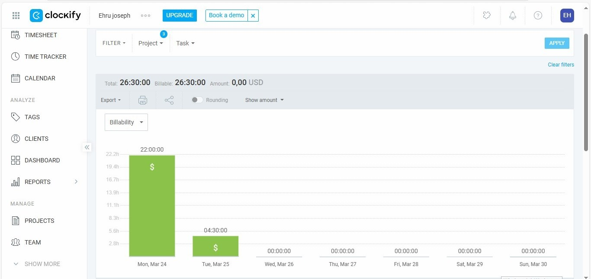 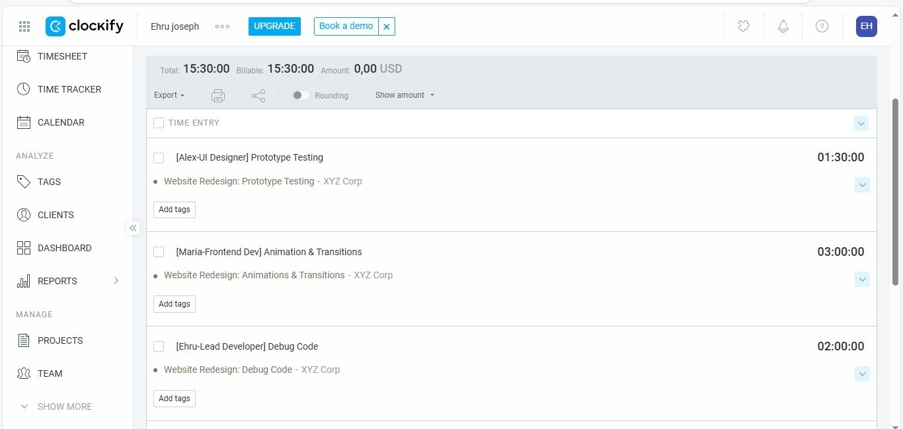Trello
Managed and tracked tasks using Trello boards to keep workflows organized and visible.
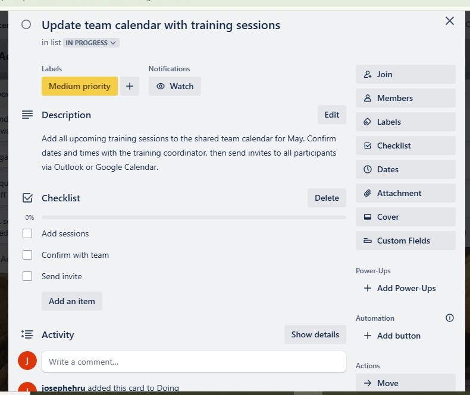 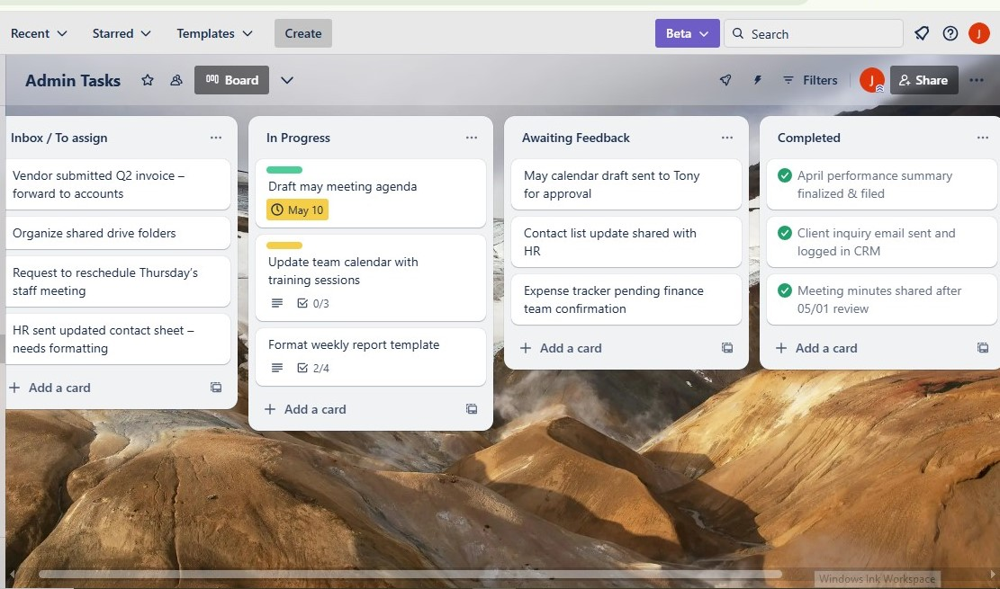